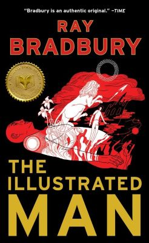

Książka opowiadająca o uciekinierach ze zdewastowanej wojną atomową Ziemi szukających schronienia na Marsie i spotykających jego mieszkańców. Jest ona zbiorem krótkich opowiadań.

Element cyklu o miasteczku Green Town. Dwóch jego młodych mieszkańców - Will Halloway i Jim Nightshade odkrywają prawdziwą naturę przybywającego do ich miasta karnawału.
Zbiór opowiadań łączonych przez postać Ilustrowanego Człowieka - mężczyzny, którego ciało pokrywają tatuaże opowiadające tajemniczą historię. Książka pełna wyobraźni, ale mówiąca dużo o rzeczywistości.
Powrót na górę strony